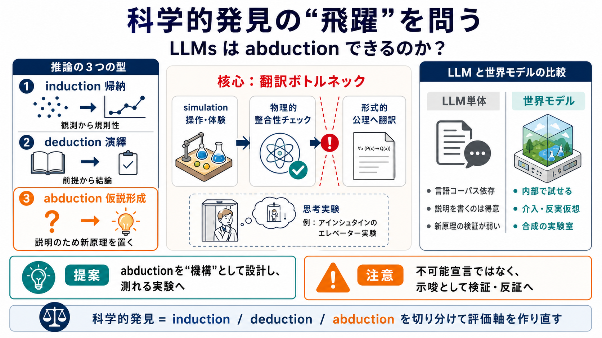

LLMs Can’t Jump: The Abductive Gap in AI Discovery
of language. Imagine if you initialized a modern large language model with Einstein's exact correct axioms from 1915. It…

科学的発見の“飛躍”を問う
科学的発見に必要な推論 abduction は、現行の最先端LLMにどこまで備わっているのか。
推論の三分類
帰納 induction は観測から一般化し、演繹 deduction は前提から導出する。
仮説形成 abduction（仮説生成/操作的“飛躍”）は、観測を説明するための新しい原理を“置く”。
言語の延長では足りない
LLMが得意な言語統計は説明を“書く”ことに強いが、abductionは「新しい原理を作って整合的に試す」ことに核心がある。
論文は、ここが言語モデル単体では埋めにくい“機構の壁”だと捉える。
キーワード：操作的abduction / 身体感覚に相当する“操作・シミュレーション” / 形式的公理への翻訳
ボトルネックの位置
abductionの成立条件は、言語の中だけで完結する推論ではなく、物理的整合性に裏打ちされたシミュレーション（感覚に相当）から形式的な公理へ翻訳できることにある。
アインシュタインの到達
例としてアインシュタインの一般相対論の形成過程を扱い、言語データからは置かれていない等価原理のような原理を、観測・思考実験を通じて掴み取る過程をabductionとして位置づける。
LLM単体 vs 世界モデル
解決策は、文章生成だけでなく物理的整合性を持つマルチモーダル世界モデル。内部に「合成の実験室」を作り、反実仮想的に仮説を即テストできるため、新規原理の生成確率が上がる。
提案の流れ
単に推論や生成を強化するのではなく、abductionが起きる条件（操作可能な検証基盤）を満たすよう研究設計を変える、という方向性を示す。
絶対否定は危険
査読では「結論が強すぎる」「世界モデルでなぜ飛躍が可能かの説明が欲しい」といった懸念が出た。
そこで著者らは表現を“確認する”から“示唆する”へ弱め、アルキメデスの例（eureka）を追加した。
要点の整理
このポジションペーパーは、abductionの欠落を“量”ではなく“機構”で扱い、翻訳ボトルネックと世界モデルを提案する。
読者が押さえる限界
abductionを“構造的に不可能”と断言するには、定義の操作化（測定可能な指標）や、エージェント的探索・外部ツール併用時の可能性が未確立な可能性がある。
結論は「不可能宣言」ではなく「設計仕様へ落とし込む枠組み」として読むのが安全。
次に必要な実験
世界モデルとLLMを組み合わせたときにabductionを“測れる形”で評価し、反証可能な実験提案へ発展させることが望ましい。
締め：問いの再設計
この提案の価値は、科学的発見をinduction/deduction/abductionに切り分け、「何をできれば発見と言えるか」を研究目標として設計し直す点にある。
・アインシュタイン：一般相対論の形成過程（等価原理の到達として言及）
・アルキメデス：eureka（王冠の純度判定）を例として追加
of language. Imagine if you initialized a modern large language model with Einstein's exact correct axioms from 1915. It…
The limitations of Large Language Models in achieving true Artificial General Intelligence (AGI) hinges on their inabili…
planning which is why people like Gakun view them as the missing link for human level AI. However, they have limitations…
General relativity, also known as the general theory of relativity, and as Einstein's theory of gravity, is the geometri…
| | | --- | | Comments: | 10 pages + 3 pages references. Accepted as a poster at the ICLR 2026 Workshop for LLM Reaso…